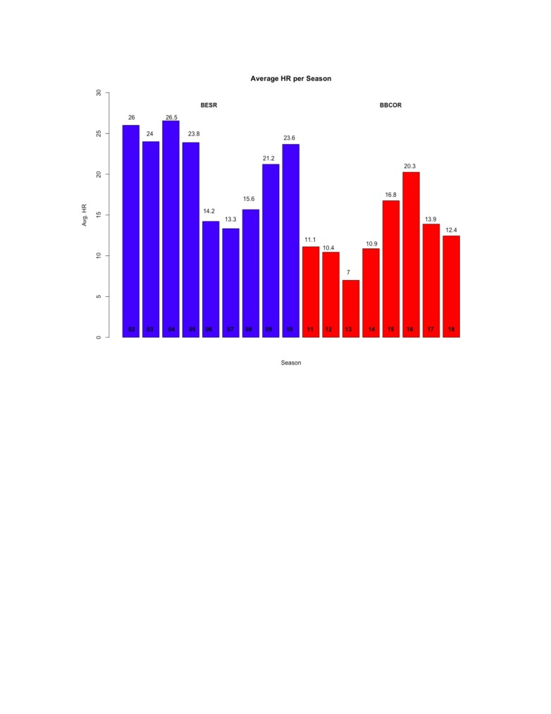

The Effects of the Bat Change in the IIAC
Luke Smailes
November 2018
After the 2010 season, the standard for aluminum baseball bats was changed across many levels including
the NCAA, a majority of high school associations, and all the way down to little league. A major surge
in offensive numbers promted the NCAA to make this change. From 2008-2010, runs were up 14% while
home runs were up 38%. While the main aims were to fix D-I play and get players hoping to reach that
level accustomed to using the same bats, the effects trickled down to Division-III baseball and the Iowa
Conference.
A lot of people will tell you that offense is what makes the game of baseball exciting, so why would anyone
want to dull it down? When you look at the science behind the play from pre-2011, the BESR era, it’s alot
easier to understand the change.
The previous bat performance standard, BESR (Ball Exit Speed Ratio) is the ratio of the speed with which
the ball exits the collision with the bat divided by the total speed of the bat and ball before the collision.
(Dr. Daniel A. Russell - Penn St.)
Vexit
BESR =
(1)
Vball + Vbat
The offensive numbers were staggering through this era, but pitchers were also being put in very dangerous
situations. Being the closest defender in play to the hitter made them extremely susceptible to getting drilled
with unavoidable come-backers. ESPN’s Sports Science found that a 90mph pitch could come off a BESR
bat at 108mph which could come back to the mound in .0375 seconds with 4,000 lbs. of force.
With this information, there was the realization that a change needed to be made and that came with
mandating the use bats that met the BBCOR standards. BBCOR (Batted Ball Coefficient of Restitution)
essentially gauges the ”trampoline effect” that the bat has on the ball, and 0.5 was set to be the maximum
coefficient. This means that BBCOR bat’s coefficient of restitution was only slightly higher than that of a
wood bat, which the NCAA used up until 1973. The sweet spot of bats went from being roughly 5 inches
with BESR bats to roughly 3 inches with BBCOR bats, causing balls to leave the bat 5% slower on average.
1

After looking at the data in the plot above of average home runs per team per season, for the most part,
we see what we expected. The BESR era with the livelier bats produced more homers, especially from
2002-2005 and then again in 2009 and 2010. But what happened from 2006 to 2008? Something was going
on. We’ve seen spring weather in Iowa make for some tough conditions to play in, but it doesn’t seem likely
that constant bad weather was the main cause for a 3 year dip in power numbers.
Maybe it just so happened that the conference teams were more focused on winning with speed, defense,
and good pitching while playing a form of ”small ball”. However, more bases were stolen from 02-05, as
shown in Table 1, when the home run numbers were high. Also, we see that there was not a lot of variance
in fielding percentages, as they were pretty constant around .940.
The most likely cause a simply random lack of power throughout the conference drom 2006-2008 without a
concerned effort to change game plans. I think the coaches began to react to the lack of power that their
teams naturally had but didn’t make philosophical changes prior to the decreased power outputs. Because
of this, we see more sacrifice bunts as the home run numbers decrease. In 2003, there were 163 total sac
bunts in the Iowa Conference. By 2007, with the lowest home run average of the BESR era, there were a
total of 259. Additionally, 2002 saw 169 sac bunts and 2008 saw 239. Bunting definitely became a bigger
part of the game plan of teams.
2
Table 1: Avg Totals per Team per Season
BESR BBCOR
H
372.7
376.1
2B
68.2
67.6
HR
21
12.8
R
252.3
228.7
SLG
.429
.379
BB
132.7
132
SO
195.7
224.7
OBP
.378
.363
SH
21.9
27.1
E
75.4
68.4
In 2004 4 teams hit at least 25 home runs (with Simpson at 47 and Coe at 46). There were only 3 teams
(Buena Vista - 2008, Buena Vista - 2009, Loras - 2009) that hit 25 or more home runs from 2006-2009.
The bats were the same, but pitching and the overall offensive makeup of teams was different. I would have
predicted that with better bats, pitchers would be more prone to pitch around hitters, resulting in more
walks. However, the walks were similar between the two eras.
In the first year of the BBCOR era (2011), an average IIAC team hit 12.5 less home runs with their new
bats than in the previous year. From 2011-2014, only 3 teams (Buena Vista - 2011, Coe - 2011, and Coe -
2012) hit 20 home runs or more. Central College went from hitting 32 home runs in 2010 to hitting 3 home
runs in 2011. In 2013, we see the extreme lull in home runs. Only one team cracked double digits (Wartburg
- 17 HRs) and Luther did not hit a single one. 2014 was better, but then 2015 and 2016 happened...
The bar plot shows what seem to be power surges in 2015 and 2016. However, two teams have dominated
the BBCOR era so far and have had big contributions to those averages. First, the 2015 Wartburg team
clubbed 45 home runs (ranking second nationally) with a .158 ISO en route to a 20-8 conference record and
33 total wins. Wartburg amazingly finished the season with the top 5 home run hitters in the conference.
Conference player of the year and Wartburg outfielder, Jacob Thumann, hit 8 homers, tied for third on his
team.
The next season, the IIAC saw another offensive powerhouse crush opposing pitchers. This time it was
Buena Vista who hit 46 home runs with a .185 ISO to go along with a team on-base percentage of .417.
They finished with a 33-11 record and were only bested by Wartburg in the conference. The Beavers were
led by their conference player of the year, Neil Marshall, who like Thumann, ranked third on his team in
home runs with 7. He also lead D-III baseball in doubles with 25.
The offensive numbers that Wartburg and Buena Vista put up in those seasons would have been good for
the BESR era, let alone with BBCOR bats. Without these two juggernauts, the home run averages would
have been normal for the BBCOR era.
Table 2: Avg Totals per Team per Season
BESR BBCOR
wOBA
.228
.208
wRC
242
243
wRAA
8.24
-8.31
ISO
.124
.095
3
When looking at the advanced metrics in Table 2, everything makes sense except for wRC. For the current
analysis, I applied the same linear weights to both eras, so the data is telling us that there were slightly
more runs created since BBCOR bats were mandated. Once I dug a little deeper, I realized that there were
a couple of factors that were attributing to this unexpected result. First, Cornell College brought down the
averages in the BESR era. They were 50 runs below the average wRC during the era and only climbed above
242 wRC once in 2003. Finally in 2011, the first year of BBCOR, Cornell posted 129 wRC as a team in
what would turn out to be their final year competing in the Iowa Conference. If Cornell is removed from
our sample, the average wRC of the BESR era is 247. The Rams are now enjoying the Midwest Conference
(or perhaps the rest of the conference is enjoying them).
Another reason why we might see a higher average wRC in the BBCOR era is the extremes on either end of
the metric. I took the bottom 20% (16 teams for BESR and 14 teams for BBCOR) of seasonal wRC totals
from both eras and I found that the average was 188 wRC in the BESR era and 193 wRC in the BBCOR
era. Then I did the same thing with the other extreme - the best offensive teams in the conference since
2002. The top 20% of BESR teams averaged 295 wRC and BBCOR teams averaged 300 wRC. This shows
us that the BESR era had more bad teams, like Cornell, weighing them down while the BBCOR era had
a couple of great offensive teams that brought the overall BBCOR average up despite using bats with less
pop.
The takeaways from this analysis are that we need to either consider the eras separately or include additional
parameters in future models to account for the disparities. For example, If I were to run a linear regression,
I would include a dummy variable to account for the two different eras.
The NCAA wanted to bring back some of the strategic aspects of the game, while also making pitchers
and infielders less prone to severe injury. So far, the switch to BBCOR bats has been successful in curbing
outrageous home run totals, but time will tell if these numbers will remain constant or if we will see more
teams have 40+ home runs seasons in the future.
4